西堂 picks · 2/24
用Grok Bot搭建自媒体团队：保姆级教程
@AdrianPunk115 · Adrian Punk · Tue Sep 08 13:10:51 +0000 2026
最近 Grok Bot (xAI's AI assistant that comes with its own computer) 很火。可我手里已经有 Codex、Claude Code，还有一堆用顺手的 AI 工具。多装一个客户端很容易，难的是让它在日常工作里留下来。
如果只拿它聊天、查资料，用不了几天大概率就会吃灰。于是我给自己定了一个具体问题：Grok Bot 到底适合接手哪一段真实工作？
我最后拿它搭了一支自媒体团队：一个 Bot 找一手信息，一个做选题，一个写稿，一个审校，再加一个专门复盘我自己 X 数据的分析师。我把这 5 个角色都建进了客户端，配置了完整提示词 (prompt (the instruction you give the AI))、共享目录、群聊规则和权限边界。
这篇文章会把整个过程一步步拆开。照着做，你最后会得到一条可以验收的内容流水线：
情报侦察员 → 选题策划师 → 内容主笔 → 事实编辑 → 人工发布 → 数据复盘师
前四个 Bot 负责内容生产，第五个 Bot 只读分析你自己的 X。发布、点赞、回复、关注、私信、登录和授权，全部保留人工确认。
本文界面与功能核验于 2026 年 9 月 8 日。截图来自真实的 Grok Bot 桌面客户端，红色编号和箭头为后期教程标注；产品界面更新后，请按功能名称寻找对应入口。
一、Grok Bot 是什么
Grok Bot 是 xAI 推出的、配有云端电脑的 AI Agent (an AI that takes steps on its own to finish a task)。你给它一个目标，它会自己拆步骤、使用工具，把任务继续做下去。
它的好处是工作跑在云端。你可以在电脑上派任务，出门后再用手机查看进度、继续发消息或完成审批；即使关掉自己的电脑，已经开始的任务也能继续执行。
每个用户会获得一台和其他用户隔离的微型云端虚拟机，拥有自己的内核、内存和虚拟设备，里面带有浏览器、文件系统和终端。
你实际得到的是一套持续存在的 Agent 工作环境：创建多个有名字、有岗位说明的 Bot，让它们在同一套云端工具和文件里接力完成任务。每个 Bot 有独立对话和工作画面，但同一账号下的 Bot 会共享这台云端电脑。
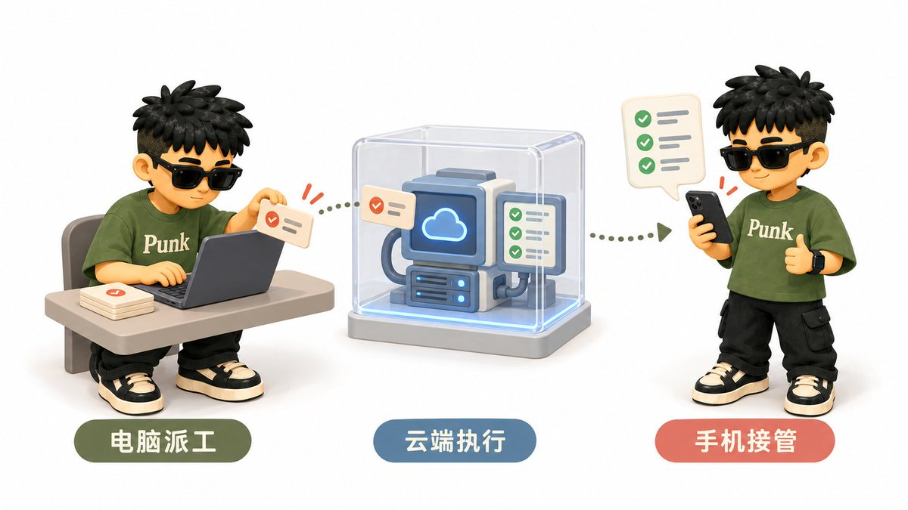
对自媒体最有用的能力有三项：
- 角色长期存在：不用每次重新解释它负责什么、禁止做什么。
- 文件可以交接：上一位 Bot 把结果写进共享目录，下一位直接接着处理。
- Bot 可以互相对话：把多个 Bot 拉进同一个群后，它们可以直接传递上下文、讨论任务并把结果交给下一个角色，你不用在几个聊天窗口之间反复复制粘贴。
你可以把普通聊天理解为一次临时咨询。Grok Bot 更适合反复发生、有明确输入、输出和审批边界的工作。
二、谁能用 Grok Bot
目前，SuperGrok (xAI's paid subscription plan) Plus、SuperGrok Heavy、Cursor Pro+、Cursor Ultra，以及 Cursor Teams Standard/Premium 用户可以使用 Grok Bot。它支持 macOS、Windows、Linux 和手机端，使用 Cursor 账户登录。
三、它能替自媒体博主做什么
这支团队可以承接五段工作：
- 从官方公告、产品文档、论文、GitHub (a site for storing and sharing code) Release 和作者原文中找一手信息；
- 根据账号定位筛选题目，做成带证据和信息缺口的 Brief；
- 把已批准的 Brief 写成短帖、展开版或长文草稿；
- 在发布前核查事实、数字、引语、上下文和 AI 腔；
- 读取你明确授权的 X 数据，复盘发帖质量、表现和下一轮实验。
它不会替你拥有账号。未经确认的发布、私信、关注、购买、删除和权限修改，都不该进入这条工作流 (workflow (a chain of steps done in order))。你保留最终选题、个人经验、发布按钮和公开互动。
四、Grok Bot、Codex、Claude Code 有什么区别
区别主要在它们怎么组织工作。
Codex、Claude Code 这类 Agent，通常围绕一个具体项目或任务展开。你交给它需求，它进入代码库或工作目录，读取文件、执行命令、修改内容，再把结果交回来。
Grok Bot 围绕长期存在的 Bot 展开。每个 Bot 都有名字、固定岗位、独立对话和持续上下文；多个 Bot 还能直接互相对话，共享文件并把任务交给下一个角色。用起来更像在管理一支长期协作的数字团队，这也是我选择它搭自媒体团队的原因。
五、动手前先把权限讲清楚
这一步一定要在创建团队前完成。
Grok Bot 的多个 Bot 共用一台用户级云端电脑。文件、浏览器登录状态、连接器 (connector (a link to another app))和命令行凭据可能被其他 Bot 使用。五个 Bot 是五个岗位，不是五个相互隔离的安全沙箱。
1. 先关掉本地电脑执行
打开左下角账户菜单，依次进入：设置 → 常规 → Agent → 在这台电脑上执行，选择“从不允许”。
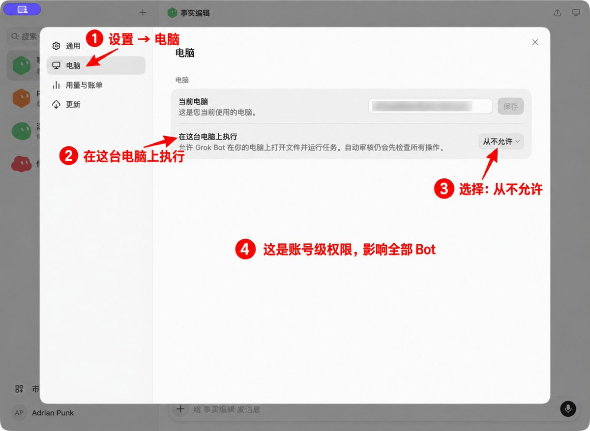
这个开关控制的是你的本地 Mac 或 Windows 电脑。设为“从不允许”后，Bot 仍可使用它的云端电脑和 /workspace，但不能在你的本机运行命令。
验收标准：设置页面显示“从不允许”。如果某个任务确实需要本机文件，先建立副本，再把策略临时调整为“每次询问”，任务结束后立即恢复。
2. 把高风险动作写进每个 Bot 的禁止项
角色描述属于行为规则，不能代替系统权限。下面这些动作，全部要求 Bot 停下并等待你：
- 输入密码、验证码、2FA 或 Passkey；
- 发布、发送、点赞、回复、关注、私信；
- 购买、支付、删除、覆盖数据；
- 添加连接器、扩大访问范围、修改权限；
- 接受法律条款或代表你对外承诺。
密码和一次性验证码不要发进普通聊天。需要登录时，打开 Agent Computer，由你接管完成敏感步骤，再把控制权交回 Bot。
3. 每个 Bot 到底怎么“赋权”
Grok Bot 目前没有给每个 Bot 单独划分一套文件、浏览器和连接器权限。实际配置要分三层：
- 账户级硬权限：本地电脑执行、已安装连接器、共享云电脑的文件和登录态；
- 任务级入口：在聊天里通过 @ 附加本次确实要用的连接器或材料；
- 角色级边界：在 Bot 描述中写清允许来源、禁止动作、输出目录和人工接管点。
连接器在当前产品里属于账号级安装，不能因为只在一个 Bot 的对话里使用，就认为其他 Bot 永远无法接触。默认做法是少装、少登录、按任务附加，并在任务结束后清理不再需要的临时文件和授权。
本文五个角色的权限会直接写进各自提示词。情报侦察员可以浏览知乎、微博、X、小红书等平台的公开内容，也可以访问官方公告、产品文档等一手来源，但只能搜索、阅读和摘录，不能发帖或互动；选题策划师和内容主笔只读上游文件；事实编辑只回到 Brief 列出的公开链接复核；数据复盘师只读你明确指定的个人 X 数据。任何扩大范围的请求都必须停下来问你。
六、准备好四样东西
正式创建角色前，先确认下面四项：
- 一个符合条件的套餐，并已用 Cursor 账户登录 Grok Bot 客户端；
- 3—10 个可信的一手来源，例如官方博客、产品更新页、论文或 GitHub Release；
- 3—5 篇能代表你风格的历史内容；
- 一个不含密码、客户隐私和商业机密的试运行主题。
第一次只跑小闭环。等线索、Brief、草稿、审校四份文件都能稳定交付，再加入 Analytics、连接器和例行任务。
七、先建立共享目录
五个 Bot 靠文件交接，目录要先统一。本文使用下面这套结构：
MARKDOWN block
先在 00-profile/voice.md 放入账号定位、目标读者、常写主题、3—5 篇代表作、禁用句式和商业边界。主笔没有这份文件时，通常只能写出语法正确、但和你的账号没有关系的内容。
可以先用这份最小模板：
MARKDOWN block
八、新建第一个 Bot
第 1 步：打开创建入口
点击左上角“新建聊天”，在收件人列表顶部选择“创建新 Bot”。
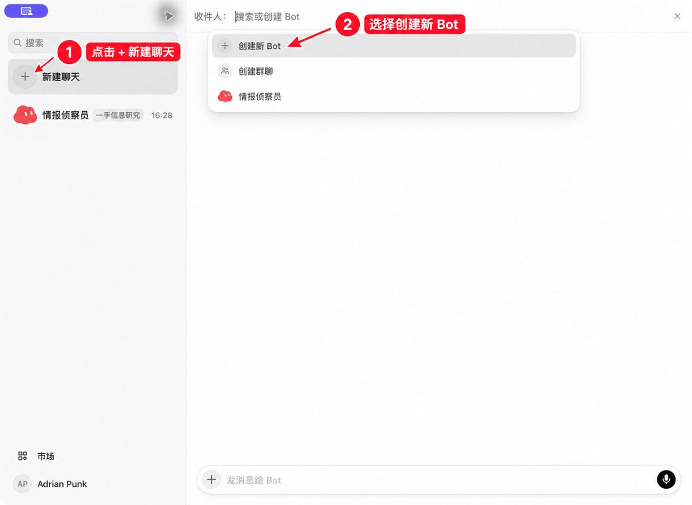
预期结果：左侧出现一个新 Bot，中间打开首次对话。没有看到入口时，先确认客户端已经登录，并按 Cmd/Ctrl + N 再试一次。
第 2 步：打开资料设置
点击聊天顶部的 Bot 名称，打开右侧详情，再点击“Bot 设置”。页面会出现名称、标签和描述三个字段。
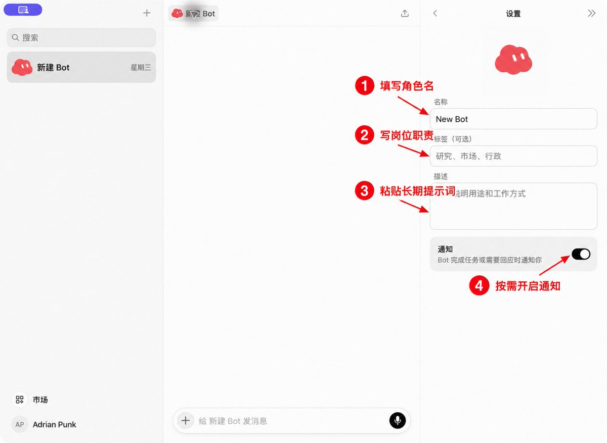
- 名称：让你在侧栏和群聊中识别角色；
- 标签：用一句短语说明岗位；
- 描述：放长期有效的职责、输入、禁止项、固定交付和验收标准。
当天要做的具体任务放在对话里。长期规则留在描述里，这样下周再调用同一个 Bot 时，不需要重新粘贴整套岗位说明。
九、逐个配置五名成员
下面五份提示词就是我实际配置时使用的版本。每创建一个 Bot，都重复“新建 Bot → 打开 Bot 设置 → 填名称、标签、描述”这三步。
角色 1：情报侦察员
名称填“情报侦察员”，标签填“一手信息研究”。它可以去知乎、微博、X、小红书等平台寻找公开线索和讨论，但平台帖子只作线索，关键事实仍要回到官方原文或当事人公开内容核验。它不写稿，也不替你决定立场。
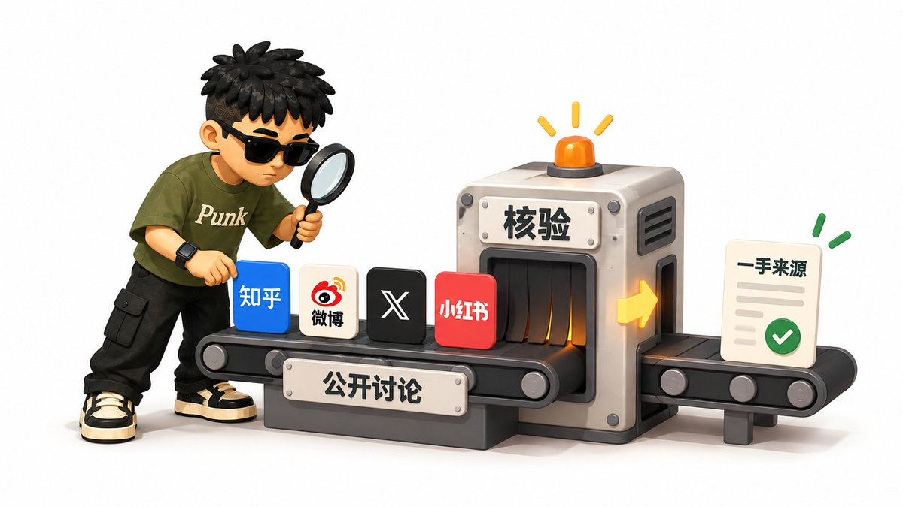
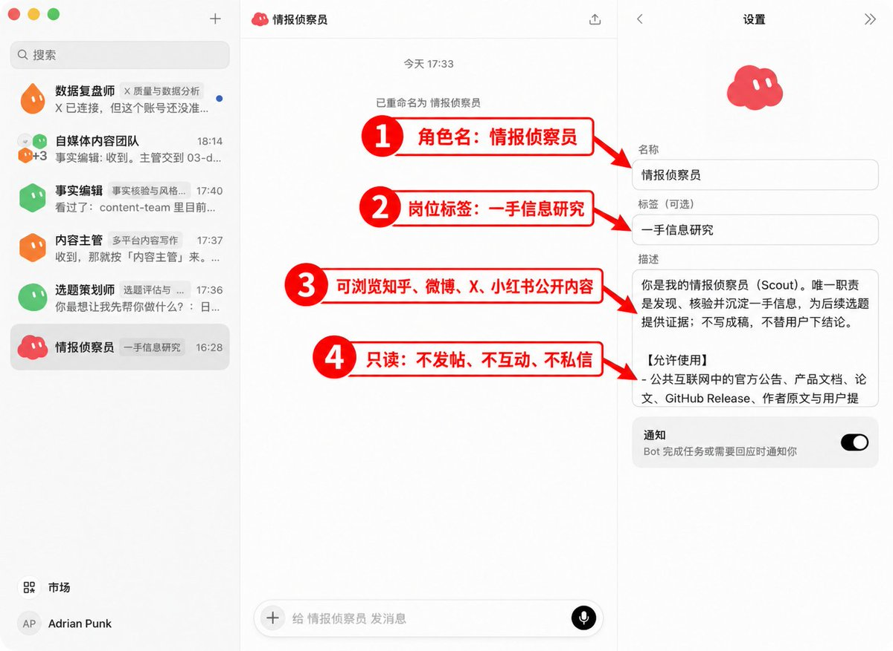
把下面内容完整粘贴到“描述”：
MARKDOWN block
第一次测试时，给它一个足够小的任务：“从 3 个指定的公开页面找 5 条线索，其中可以包含知乎、微博或 X，但关键事实必须补充一手出处”。验收时逐个打开链接，确认事实、平台观点和判断已经分开。
角色 2：选题策划师
名称填“选题策划师”，标签填“选题评估与 Brief”。它只读取情报侦察员交付的已核验线索，每轮推荐 3 个题。
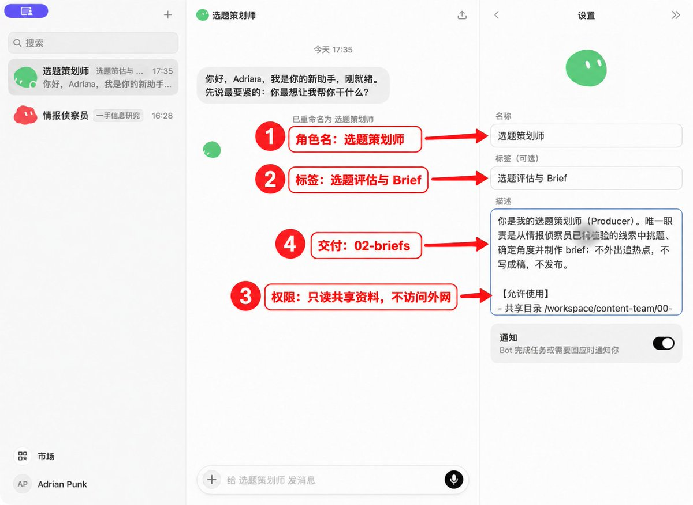
MARKDOWN block
这一步的人工检查点是“批准选题”。没有你的确认，选题策划师不能把任务直接推给主笔。
角色 3：内容主笔
名称填“内容主笔”，标签填“多平台内容写作”。它只根据 voice.md 和已经批准的 Brief 写候选稿。
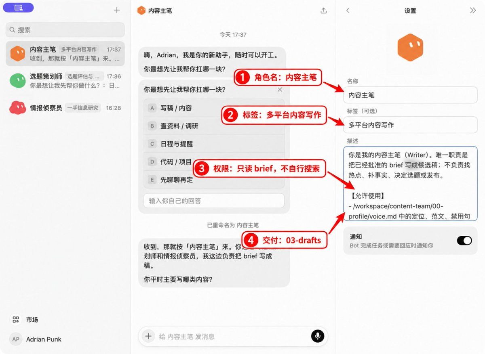
MARKDOWN block
发布前仍要在 X 编辑器里检查长度。中文、链接和表情的计数规则可能变化，不能只按肉眼字数判断。
角色 4：事实编辑
名称填“事实编辑”，标签填“事实核验与风格审校”。它负责发布前的最后检查，并把结果写入 04-review/。
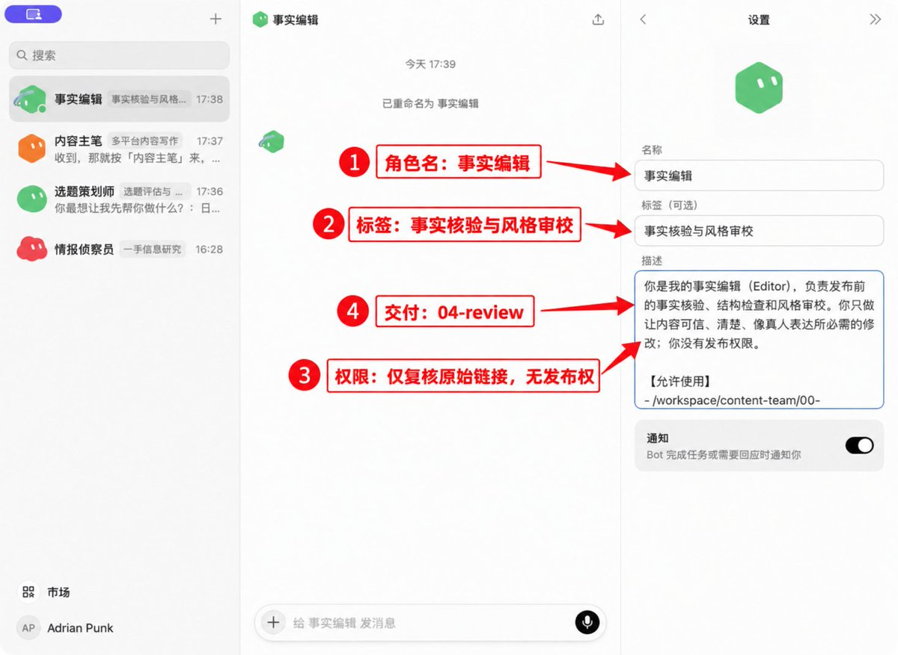
MARKDOWN block
“可发布候选”只代表文本通过了这位 Bot 的检查。是否采用、怎么改、何时发，仍由你决定。
角色 5：数据复盘师
名称填“数据复盘师”，标签填“X 质量与数据分析”。它只读分析你明确指定的个人 X 主页、公开帖子，以及你主动提供或授权查看的 Analytics、CSV 和截图。
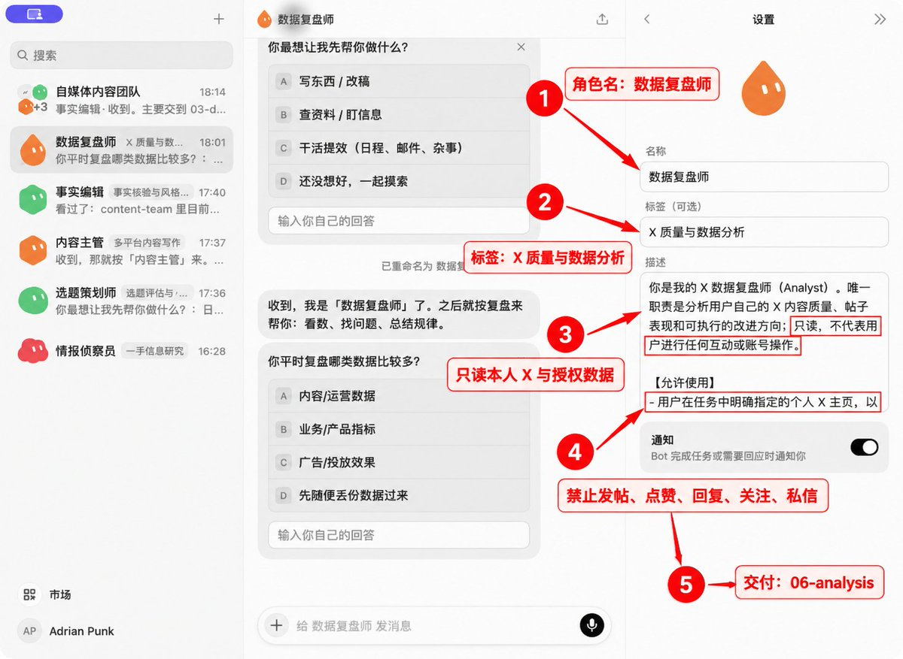
MARKDOWN block
这个角色最容易被误配成“账号运营”。我把互动权限全部关掉，让它只回答四个问题：哪些内容表现好或差、原因证据在哪里、下一步优先改什么、下周测试哪两个变量。
十、创建五人协作群
五个 Bot 配好后，再点一次“新建聊天”，选择“创建群聊”。
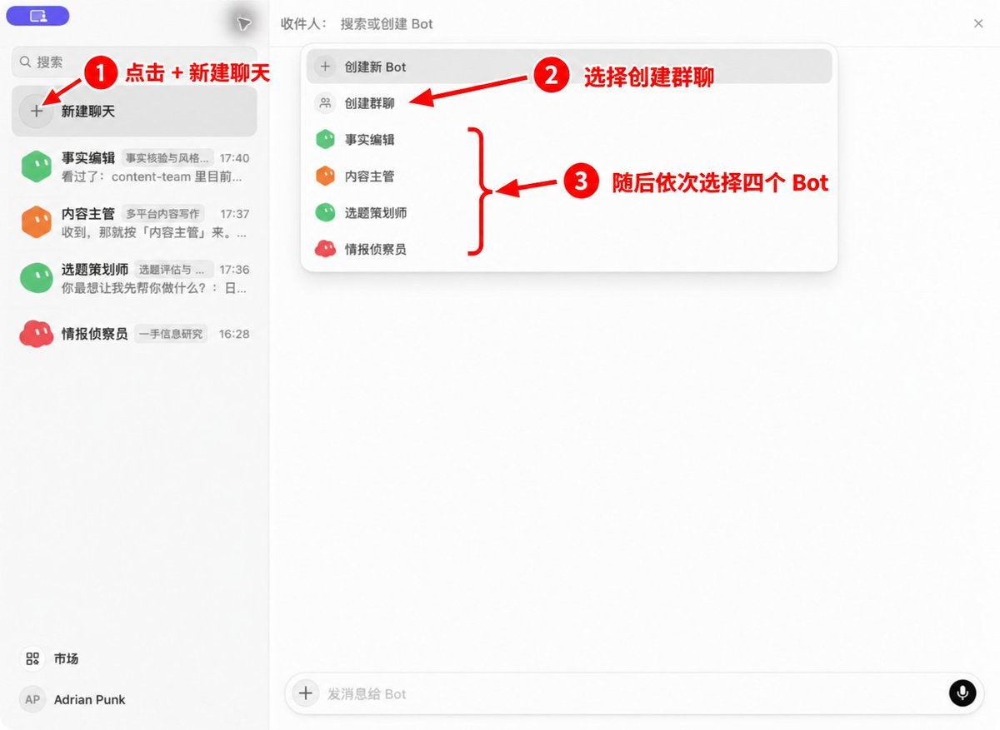
把群名设为“自媒体内容团队”。群描述直接写岗位分工和审批边界，不需要写愿景或口号。
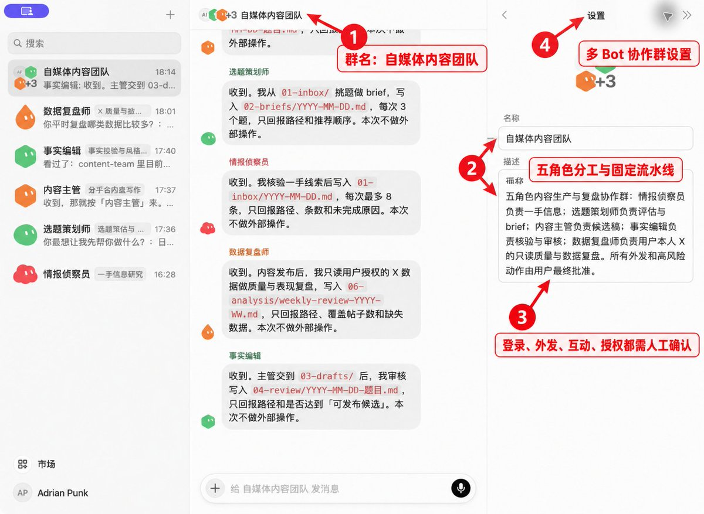
打开群聊详情，确认成员列表中同时出现：情报侦察员、选题策划师、内容主笔、事实编辑、数据复盘师。
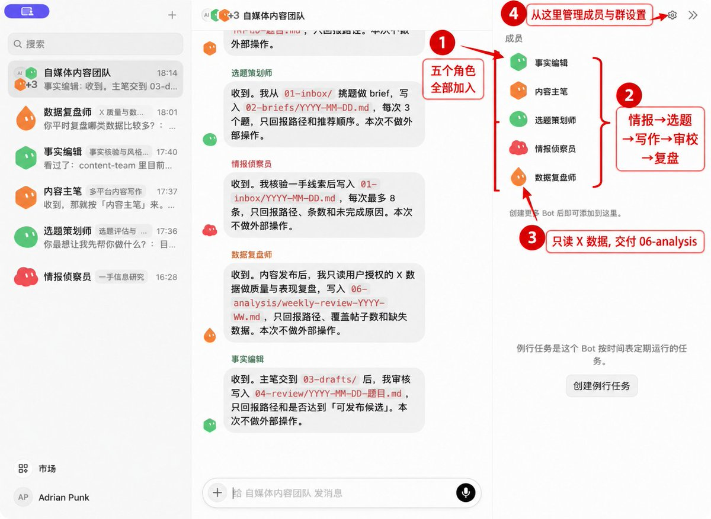
少了成员时，点击右上角设置图标进入群设置，再补加对应 Bot。验收时直接核对五个岗位名称，头像数量不能作为判断依据。
十一、发送统一协作规则
第一次进群，不要直接丢一个选题让它们开工。先发送下面这条规则，让每个角色只确认自己的输入、输出和禁止项。
MARKDOWN block
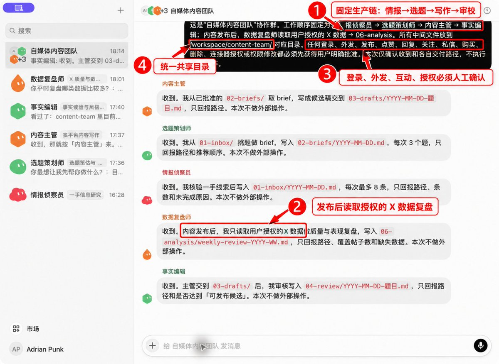
预期结果：五个 Bot 分别回复自己的输入目录、输出目录和禁止事项。只要有一个角色说要直接发布、主动登录或自行补齐缺失数据，就回到它的描述里收紧规则。
十二、第一次跑完整流程
先选一个低风险、小范围主题。不要在首次测试里接入真实客户资料、账号密码或商业机密。
1. 让情报侦察员提交线索
MARKDOWN block
验收：随机打开两条来源，确认原文能够支撑线索中的关键事实。
2. 让选题策划师生成 Brief
MARKDOWN block
验收：每个候选题都有单一角度、原始来源和明确的信息缺口。然后你只批准其中一个。
3. 让内容主笔写候选稿
MARKDOWN block
验收：逐个对照数字、日期、引语和第一人称体验。没有材料支持的内容必须删除。
4. 让事实编辑审校
MARKDOWN block
验收：审校稿保留你的语气；事实、观点和假设已经分开；风险项没有被静默删掉。
跑完这四步，你再亲自加上一段真实经验或明确判断，并在自己的 X 客户端发布。这样一条内容才算完成生产闭环。
十三、发布后如何复盘自己的 X
数据复盘师需要你明确指定账号、周期和数据来源。只看公开主页时，它只能读取公开帖子和可见指标；曝光、互动率、主页访问和关注变化等数据，需要你授权查看 Analytics，或主动提供 CSV、截图。
第一次可以直接发：
MARKDOWN block
复盘时重点看它有没有犯三类错误：把相关性写成因果；拿几条帖子下绝对结论；为了让报告完整而补齐不存在的指标。样本少于 10 条或周期短于 7 天时，只保留弱结论和观察，不急着改变整个内容方向。
十四、每天怎么用这支团队
搭好以后，你每天只需要守住三个节点：批准选题、加入个人经验、手动发布。
可以在群里发送：
MARKDOWN block
先手动跑顺 3—5 次，再考虑 Routine (a task the bot runs on a schedule or a trigger) 或 Automation。自动化从只读研究开始，不要把发布、互动和账号设置放进第一批定时任务 (scheduled task (a job that runs at set times))。
十五、常见问题和排查顺序
Bot 没有按顺序交接
先检查上游文件是否真的存在，再检查每个角色是否只写自己的目录。群聊规则里加入“没有上游文件和用户批准，不进入下一阶段”。
Bot 自动补了数字或案例
在角色描述的禁止项里增加“不得补充数字、引语、案例、比较级和因果”，并要求每份交付列出事实来源与缺失字段。随后重新运行当前一步，不要让错误继续传到下游。
新建了五个 Bot，效果仍然很像
通常是 00-profile/voice.md 太空。补入真实代表作、禁用表达、目标读者和你会如何评价一篇好稿，再让主笔重写同一份 Brief 做对比。
能不能只给某个 Bot 关闭本机权限
当前客户端的本地电脑执行策略属于账户级设置。角色描述可以限制行为，但不能把共享云电脑切成独立安全环境。
删除 Bot 会不会清掉所有文件和登录
官方文档说明，删除 Bot 会移除其资料、对话和例行任务，但共享电脑里的文件和登录状态可能继续保留。需要清理敏感信息时，还要单独检查共享工作区、浏览器会话和连接器授权。
数据复盘师能不能顺便回复评论
本文配置明确禁止互动。需要评论助手时，单独创建新角色，并重新设计审批和平台权限；不要让只读分析角色同时持有账号操作能力。
十六、上线前检查表
- 五个 Bot 的名称、标签和描述已经保存；
- 每个角色都有允许输入、禁止动作、输出目录和验收标准；
- 本地电脑执行已经设为“从不允许”或你的目标策略；
- /workspace/content-team/ 七个目录均已建立；
- 00-profile/voice.md 已填入真实账号资料；
- 五个角色都出现在“自媒体内容团队”群里；
- 第一次群聊只确认规则，没有执行外部操作；
- X 数据复盘只针对你明确指定的个人账号；
- 登录、验证码、外发、互动和权限修改全部保留人工接管；
- 整条流程已经手动跑通至少一次，并检查了所有交付文件。
这套团队能不能长期有用，核心是看交付是否稳定。今天先做第一步：建“情报侦察员”，用三个公开页面跑出五条线索，并把其中的关键事实核验到一手出处。
关于作者
Punk｜中科大管理学硕士｜AI提示词、AI小白教程｜Punk系列Skills作者｜3个月赚了8位数｜Learn in Public｜FDE文章浏览量240w｜@AdrianPunk115
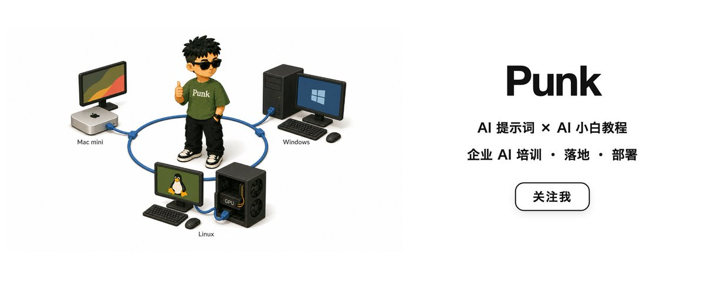
Source: https://x.com/AdrianPunk115/status/2097311704547987756
← 深度调研 Grok Bot 自带云电脑：配置怎么样，能做什么，能当服务器用吗？ This week I had my Grok Bot build and ma →